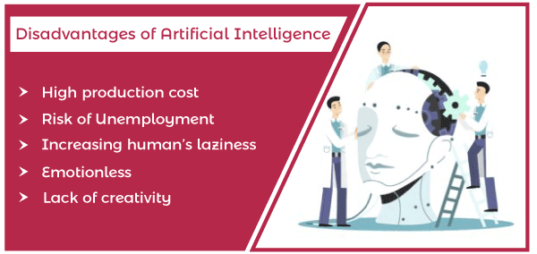
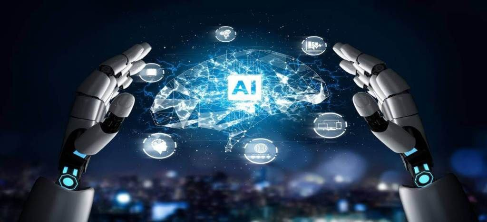

-Reliance on machines

-replace low-skill jobs
-restricted work
Throughout history, man has searched for an invention that can simulate the human mind in its thinking pattern. Artists, writers, filmmakers, and game developers alike have tried to find a logical explanation for the concept of artificial intelligence. For example, in 1872, “Samuel Butler” spoke in his novel “Eriohon” 1872 about machines and the great role they will play in developing humanity and moving the world to development and prosperity.
And over time, artificial intelligence was present only in science fiction, sometimes highlighting the potential benefits of artificial intelligence on humanity and its bright human aspects, and at other times highlighting the negative aspects expected of it, and it is portrayed as the fierce enemy of humanity who intends to usurp civilization and control it. In 2018, artificial intelligence has become a reality, not a fiction, and it no longer occupies a place in the world of popular culture only. The year 2018 was a major shift for artificial intelligence, as this technology has grown significantly on the ground until it has become a major tool that is at the core of all sectors.
Artificial intelligence can also be used to support marginalized groups in society, as the Sage Foundation recently partnered with the Seoul City Institute for Social Justice in South Africa to launch rAInbow, an AI-powered program that works to help victims of domestic violence. Where domestic violence victims were interviewed to gain a better understanding of how to seek help, South Africa was chosen because it tops the list of countries with the highest rates of female homicide in the world.
The “rAInbow” program works to provide a safe environment for victims of domestic violence, as this program helps marginalized groups to know their rights and support options available to them, in addition to the places where they can receive help in a very easy and smooth way, noting that it can be obtained through Facebook Messenger ( Facebook Messenger).
In a similar vein, Microsoft announced the launch of a new five-year, $40 million program called AI for Humanitarian Action, which will harness the capabilities of artificial intelligence to help the world recover from disasters, meet the needs of children, and the protection of refugees and displaced persons, as well as the promotion of the application of human rights laws.
While knowing what artificial intelligence is is one thing, understanding the basic functions is another. Artificial intelligence works by processing data through advanced algorithms. It combs through large datasets with its algorithms, learning from patterns or features in the data. There are many theories and subfields in artificial intelligence systems, including:
Machine learning uses neural networks to find hidden insights from data, without being programmed as to what to look for or what to infer. Machine learning is a popular way for software to find patterns and get smarter over time.
Deep learning will use huge neural networks with many layers, taking advantage of their size to process huge amounts of data with complex patterns. Deep learning is a component of machine learning, only with larger data sets and more layers.
 Cognitive computingCognitive computing aims at human-like interaction with machines. Think of robots that can see and hear, and then respond as a human would.
In artificial intelligence, computer vision uses pattern recognition and deep learning to make sense of an image or video. This means that the device can look around and take pictures or videos in real time, interpreting what is around it.
The overall goal of artificial intelligence is to make a program that can recognize the input, and explain the result with its output. Artificial intelligence gives human-like interactions, but it won't replace humans any time soon
In conclusion, today the term artificial intelligence has become one of
the terms that people circulate a lot, especially with the proliferation
of smart phones and applications, as artificial intelligence offers many
tasks that require inputs that people must perform.
And it was replaced by artificial intelligence, which became an automated
response service and communicated with clients of companies and
institutions via the Internet, in addition to performing many tasks via
live broadcast, such as playing chess or any other game, and artificial
intelligence also contributed to saving the time and effort of the
research that it was doing. people before, and it became easy and fast.
Artificial intelligence focuses on the processes of exchanging information
and knowing what is going on in the world to focus information and data
around it. It has also been used in learning and education processes, in
addition to performing many tasks and improving its general performance.
Especially since artificial intelligence is used in designing logos,
processing data and accounts, and responding to customer inquiries. It
also reduces the need for workers, because artificial intelligence
combines many skills at the same time. It combines statistics and computer
skills.